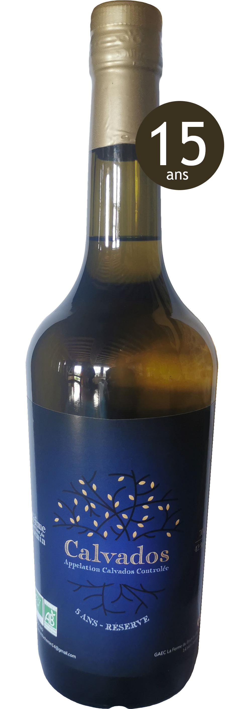
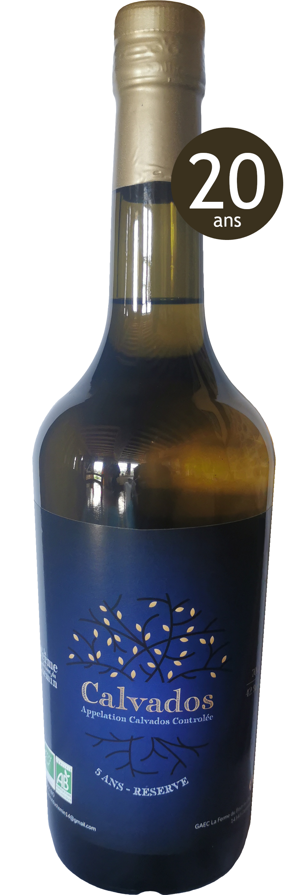
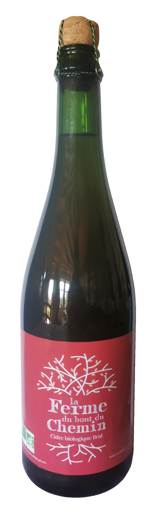
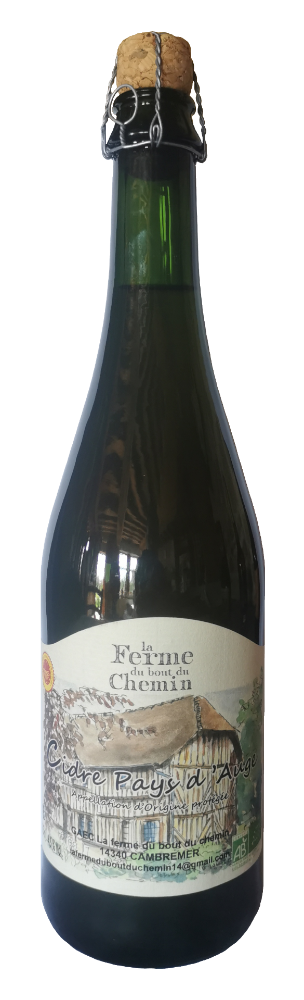
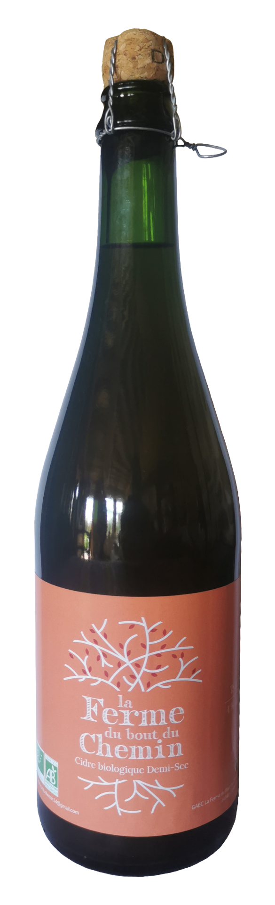
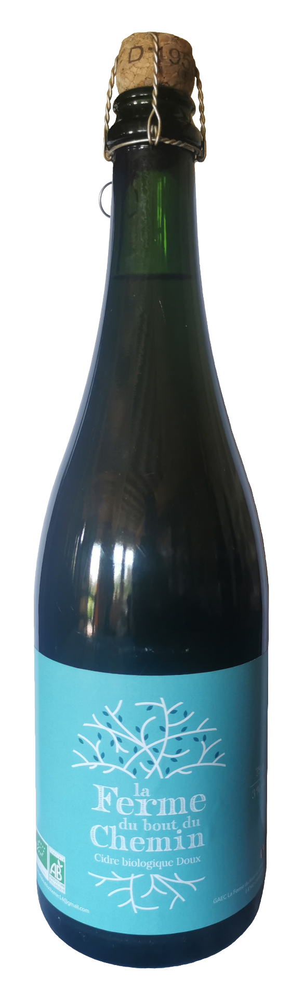
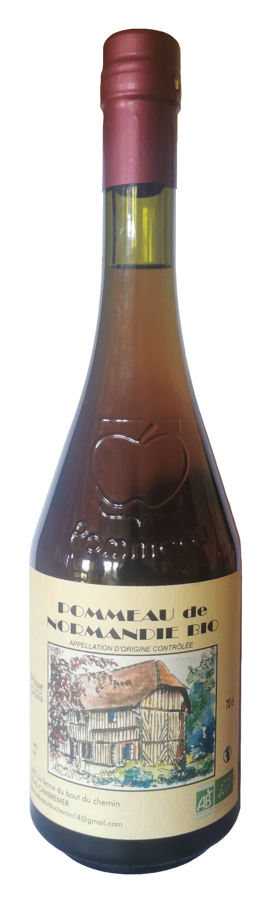
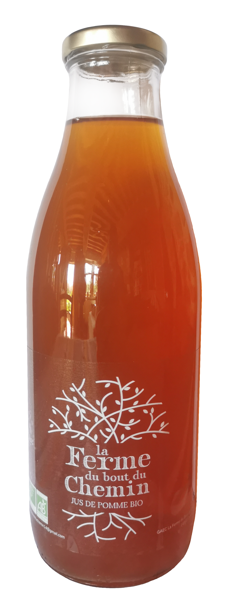
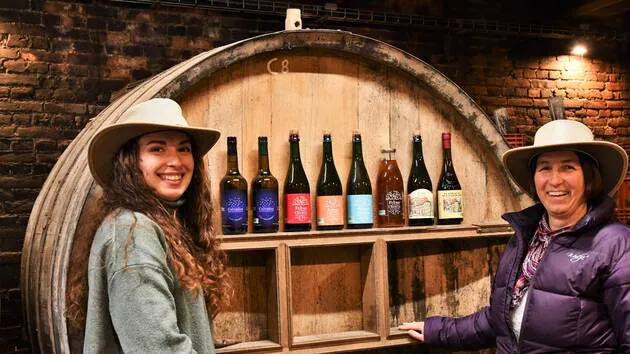

...pour goûter nos produit et savourer un moment authentique et atypique à la ferme
Calvados 5 ans
70 cl
de couleur blonde et au goût fruité et vif. Il sera idéal pour le traditionnel trou normand, en cocktail ou encore en cuisine.
Calvados 10 ans
70 cl
Un calvados équilibré avec des notes fruitées.
Calvados 15 ans
70 cl
Dans ce calvados vous trouverez une touche de fruité et une finition boisée.
Calvados 20 ans
35 cl et 70 cl
Des notes de boisé, la rondeur des pommes cuites au four pour ce très vieux calvados.
Calvados 25 ans
35 cl et 70 cl
une couleur ambrée et des notes franches de boisé et de caramel caractérisent ce calvados d'exception.
Cidre brut
1L
Cidre de caractère, désaltérant avec sa pointe d’amertume.
5% vol
Cidre AOP
1L
Le goût authentique du Pays d'Auge avec ses arômes doux et fruités légèrement tanniques.
4.5% vol
Cidre demi-sec
1L
Équilibré et fruité, idéal en apéritif.
4.5% vol
Cidre doux
1L
Riche en bouche avec ses arômes de pommes mûres.
3% vol
Pommeau
1L
De couleur ambrée, avec des arômes de pomme juste compotée, relevé par la vivacité du Calvados.
18% d'alcool
Jus de pomme
1L
Le bon goût de nos vergers, fruité et doux.
0% d'alcool
C’est sur la route du cidre, dans le pays d’Auge, que se situe cette ferme typique à colombage, du 17ème siècle. Nos arrière-grands-parents, René et Hélène Turmel, y travaillèrent de 1948 à 1960 et lorsqu’ils partirent à la retraite, leur fils Robert et son épouse Denise leur succédèrent. Jusque dans les années 70, l’activité est partagée entre la production laitière et cidricole. Avec la naissance de la route du cidre, la ferme se spécialise dans le domaine cidricole. Elle compte aujourd’hui 7 hectares de vergers hautes tiges, environ 600 pommiers de 20 variétés différentes, en majorité des variétés locales du Pays d’Auge. En 1995, notre grand-père Robert Turmel cède sa place à Luc Bignon, son gendre. Ce dernier engage dès 1997 la conversion en Agriculture Biologique, pratique alors peu répandue à l’époque. Pendant toute sa carrière, Luc s’est attaché à élaborer des produits de qualité tout en laissant la nature maîtresse. A partir de 2019, nous avons préparé la transmission de la ferme : chacune a suivi une formation spécialisée en production cidricole, Éloïse après des études agricoles, Estelle en reconversion d’un début de carrière dans l’industrie laitière. C’est ainsi que depuis le mois d’avril 2022, nous avons le plaisir de vous accueillir à la ferme du bout du chemin et de vous présenter nos cidres, notre pommeau, nos calvados et notre jus de pomme.
Date/date/date

Médaille d’Or : pour notre pommeau, dans la catégorie Pommeau + de 2 ans. Médaille d’argent : pour notre Calvados très vieille réserve 25 ans d’âge, dans la catégorie Calvados AOC 13 ans et plus
Date/date/date
Médaille d’Or : pour notre pommeau, dans la catégorie Pommeau + de 2 ans. Médaille d’argent : pour notre Calvados très vieille réserve 25 ans d’âge, dans la catégorie Calvados AOC 13 ans et plus
Date/date/date
Médaille d’Or : pour notre pommeau, dans la catégorie Pommeau + de 2 ans. Médaille d’argent : pour notre Calvados très vieille réserve 25 ans d’âge, dans la catégorie Calvados AOC 13 ans et plus
Date/date/date
Médaille d’Or : pour notre pommeau, dans la catégorie Pommeau + de 2 ans. Médaille d’argent : pour notre Calvados très vieille réserve 25 ans d’âge, dans la catégorie Calvados AOC 13 ans et plus